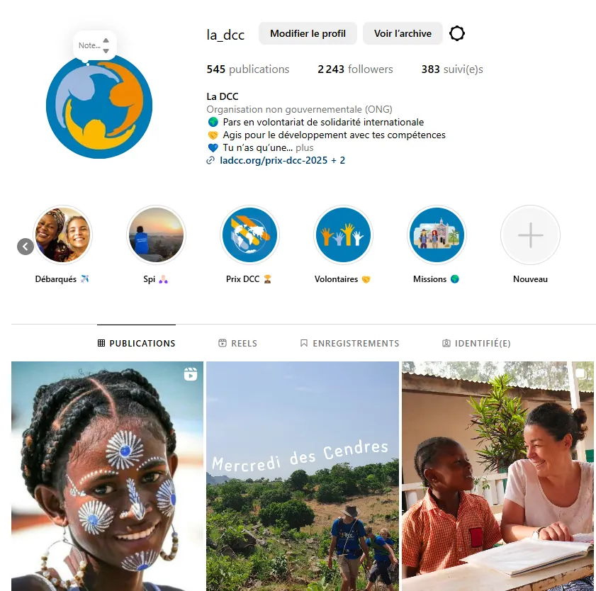
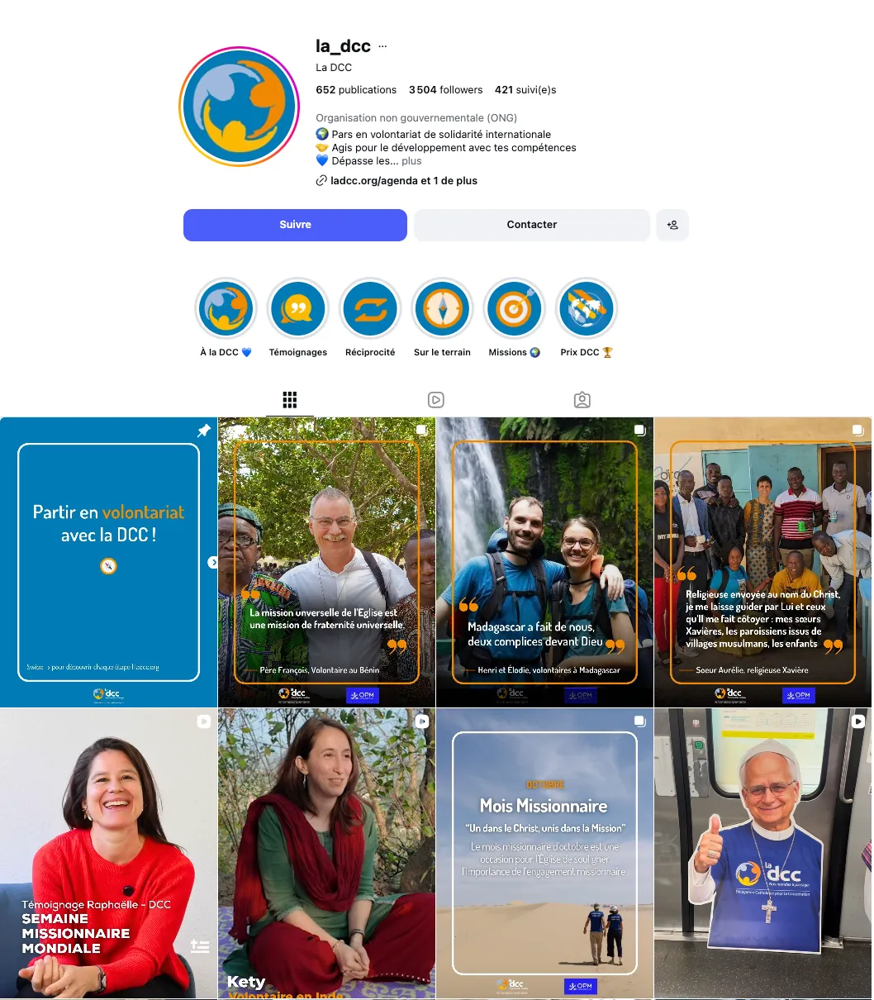
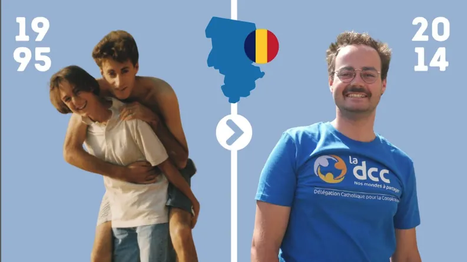
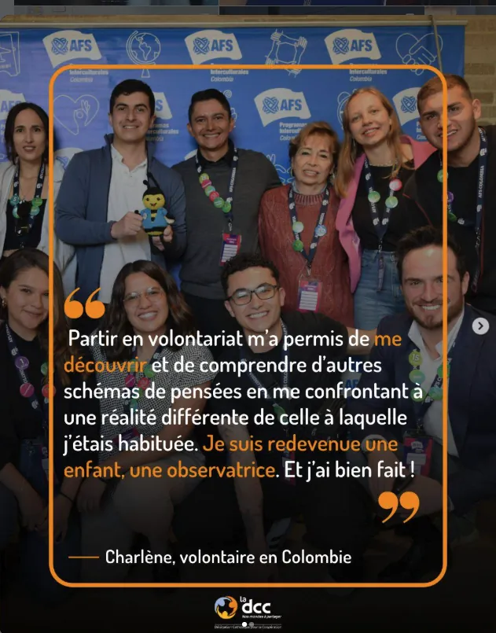
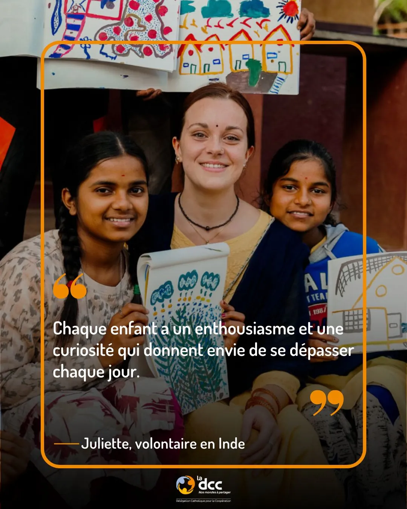
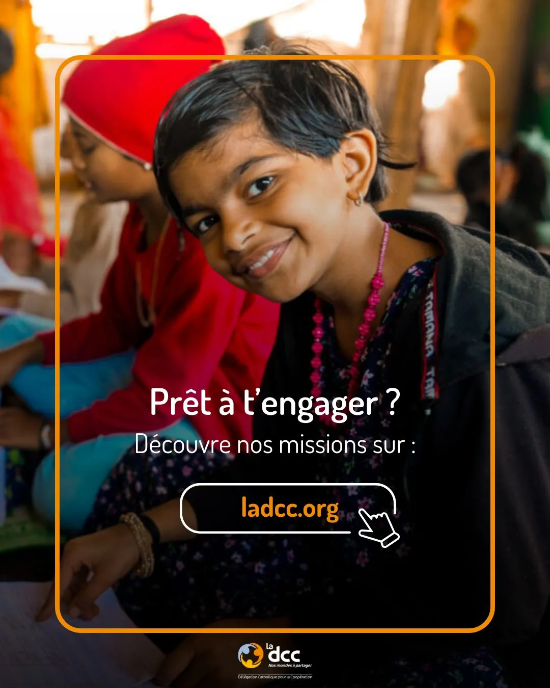
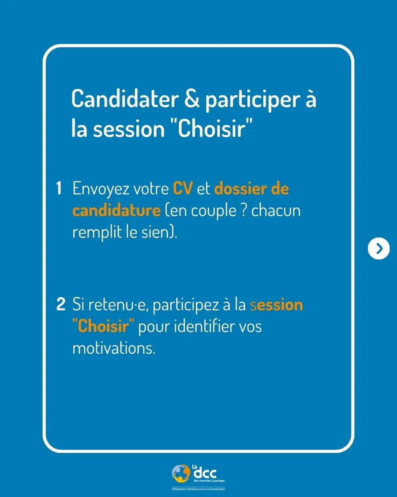
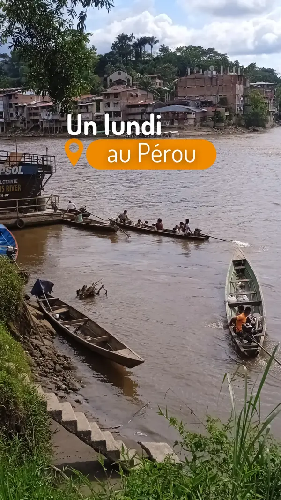
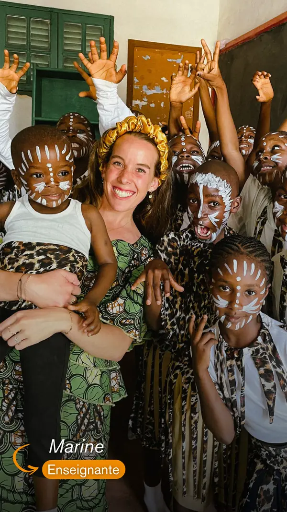

Stratégie réseaux sociaux : montrer le terrain pour recruter
En 2025, la DCC parlait surtout d’elle-même sur les réseaux, à une audience en partie hors cible. Avec la chargée de communication, j’ai bâti une stratégie par réseau, une nouvelle ligne éditoriale et des templates Canva, pour un seul objectif : plus de candidatures qualifiées au volontariat.
- AvantJanvier 2025

2 243abonnés - AprèsOctobre 2026

3 504abonnés, soit +56 %
Même compte, 21 mois d’écart : des visuels harmonisés, des « à la une » repensés et une grille qui donne à voir le terrain.
01
Le point de départ
Début 2025, la DCC est présente sur trois réseaux. J’ai commencé par un audit : qui sont les abonnés, quels contenus fonctionnent, et sont-ils alignés avec les futurs volontaires ?
- abonnés Facebook
- 9 800
- abonnés LinkedIn
- 4 500
- abonnés Instagram
- 2 200
Trois constats
seulement des publications Instagram de 2024 parlaient du terrain. Le reste : l’actualité du siège.
des abonnés Facebook vivaient hors de France, loin de la cible des candidats au volontariat.
d’engagement sur Facebook en 2024 par rapport à 2023.
02
Une stratégie par réseau
Plutôt que de publier la même chose partout, chaque réseau a reçu un rôle, une cible et des objectifs chiffrés.
- Cible
- Les 25-34 ans, plus de la moitié de l’audience
- Leviers
- Reels, contenus incarnés, tendances, micro-influenceurs
- Objectifs
- 3/4 de contenus terrain, +20 % d’abonnés
- Cible
- Français et Européens sensibles au bénévolat et à l’Église
- Leviers
- Témoignages, appels à l’action, campagnes payantes ciblées
- Objectifs
- 60 % d’abonnés en France, +15 % d’engagement
- Cible
- Jeunes actifs, partenaires, anciens volontaires
- Leviers
- Portraits à angle professionnel, compétences, impact local
- Objectifs
- 2 posts par semaine, +10 % d’abonnés
YouTube, de son côté, sert de plateforme d’hébergement des vidéos plutôt que de réseau à animer.
03
L’organisation
Comité éditorial mensuel
Choix des sujets, recensement des témoignages et photos disponibles, arbitrage des demandes internes.
Planification sur Notion
Un calendrier partagé avec la chargée de communication pour publier au moins deux fois par semaine.
Faire vivre le réseau
Inciter les volontaires à identifier la DCC, repartager leurs contenus et répondre aux commentaires.
La règle éditoriale qui guide chaque publication.
04
Les templates
Conçus sur Canva, réutilisables par toute l’équipe.
Pour que le terrain se reconnaisse au premier coup d’œil, j’ai créé une famille de templates aux couleurs de la DCC. Chaque publication suit les mêmes codes, quel que soit le réseau ou la personne qui la produit.
- AvantUne mise en page différente à chaque publication, sans repère commun.

- AprèsLe template témoignage : la parole du volontaire au centre, signée et située.

La famille de templates

Témoignage
Une citation forte, le prénom et le pays de mission.

Appel à l’action
La dernière slide des carrousels, qui renvoie vers les missions.

Carrousel pédagogique
Répondre aux questions des candidats, étape par étape.
Stories
Le même univers au format vertical : le portrait d’un volontaire avec sa mission, et des instants de vie sur le terrain.


- Cadre orange arrondi qui encadre chaque visuel
- Guillemets orange pour signaler un témoignage
- Mots-clés en orange pour guider la lecture
- Signature : prénom, puis pays de mission
- Logo DCC toujours en pied de visuel
- « À la une » Instagram redessinées dans le même style
05
Les résultats
d’abonnés Instagram entre janvier 2025 et octobre 2026, de 2 243 à 3 504. L’objectif était de +20 %.
- de contenus terrain : témoignages et vidéos
- + de 80 % Objectif : 75 %
- nouveaux abonnés LinkedIn
- +1 200
- nouveaux abonnés Facebook
- +1 000
Les publications sont aussi devenues plus régulières, avec davantage de formats vidéo.
06
Ce que j’en retiens
Enseignements
- Un audit chiffré rend la stratégie évidente et facile à défendre en interne
- Donner un rôle à chaque réseau évite de publier partout la même chose
- Des templates partagés font gagner du temps et rendent la marque reconnaissable
- Les contenus incarnés, portés par les volontaires eux-mêmes, sont ceux qui engagent le plus